Тревога по уровню
- создавать тревогу, которая срабатывает, когда значение тега пересекает границу;
- находить тревоги в дереве Конфигуратора и квитировать их;
- смотреть историю срабатываний тревоги.
Когда уровень в баке поднимается до 90 % и выше, у «Насоса» возникает тревога «Высокий уровень», и в дереве Конфигуратора загорается красный кружок. Оператор квитирует тревогу в списке тревог, а когда уровень опускается ниже 90 %, тревога пропадает.
Тревога сообщает, что с объектом что-то не так. В простейшем случае это значит, что значение параметра вышло за допустимую границу: бак переполняется, давление упало. В платформе тревога — узел под тегом. Платформа сравнивает с границей каждое новое значение этого тега.
Что собираем
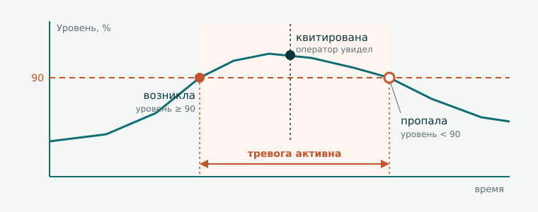
Под тегом «Уровень» создадим тревогу «Высокий уровень» с условием «значение ≥ 90». У тревоги три события:
- возникла — в тег пришло значение 90 или больше. С этого момента тревога активна;
- квитирована — оператор подтвердил, что видит тревогу. Квитирование не снимает тревогу: она остаётся активной, пока уровень не опустится;
- пропала — в тег пришло значение меньше 90, тревога перестала быть активной.
Тревога в Конфигураторе
Нажмите «…» справа от тега «Уровень» и выберите Новая тревога.
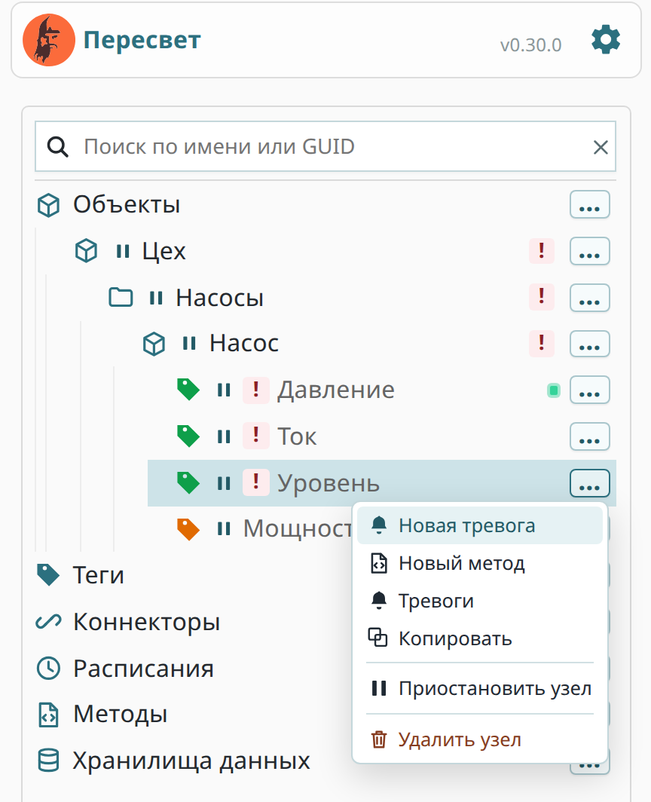
Справа откроются свойства новой тревоги. Заполните их:
| Поле | Значение |
|---|---|
| Имя | Высокий уровень |
| Сравнение | >= — тревога, когда значение тега не меньше границы |
| Значение | 90 |
| Автоквитирование | Нет — квитировать будет оператор. По умолчанию стоит «Да», не забудьте переключить |
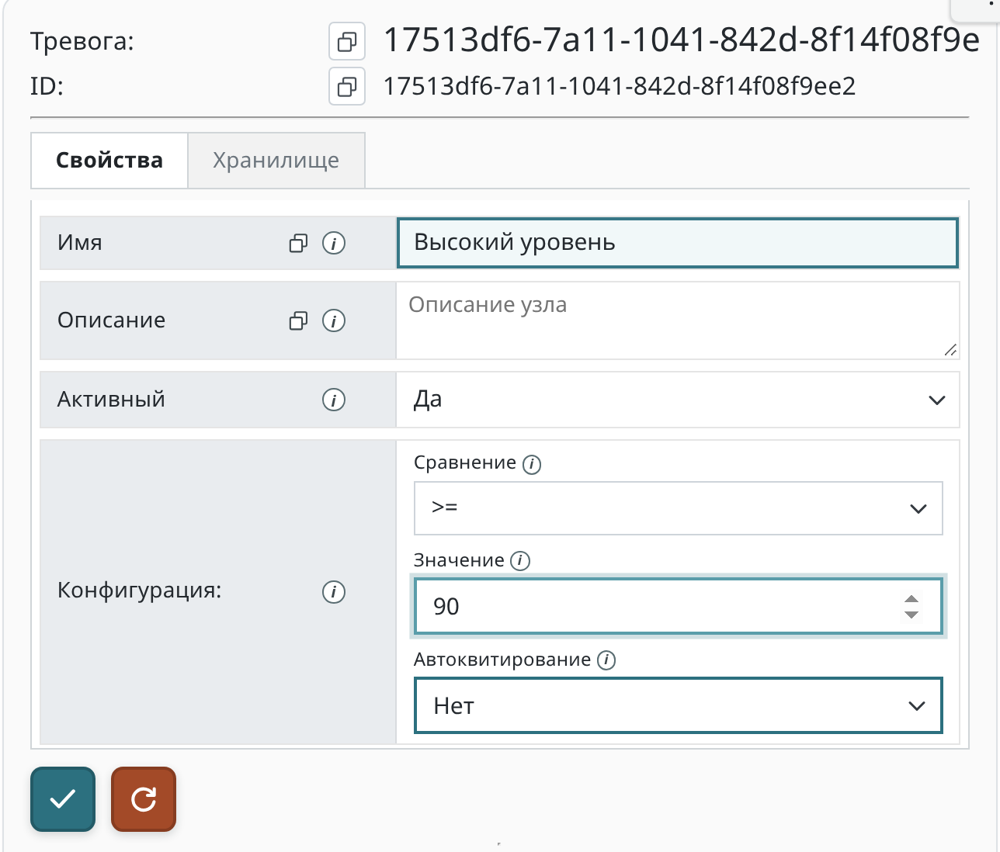
=, значение 90, автоквитирование «Нет»">Нажмите «Записать». Тревога появилась в дереве под тегом «Уровень».
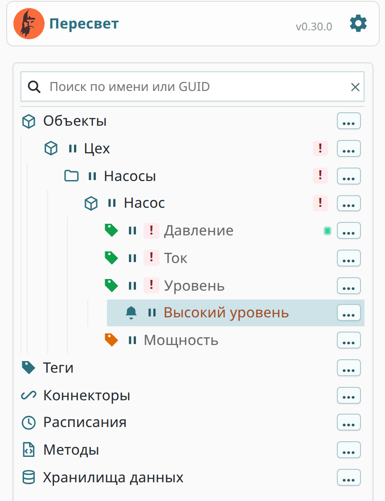
Настройка привязки к хранилищу по умолчанию включена (урок 2), поэтому тревога, как и тег, сразу привязана к psql. Туда платформа записывает моменты возникновения, квитирования и пропадания тревоги — историю мы посмотрим в конце урока.
Что такое автоквитирование
Если в поле «Автоквитирование» выбрать «Да», платформа квитирует тревогу сама в момент её возникновения. Так настраивают тревоги, которые нужно только записать в историю, а не показывать оператору как требующие внимания.
Тревога возникла
Запишите в тег «Уровень» значение 95 — так же, как в уроке 2: вкладка «Хранилище», блок «Данные тега», «Запрос на запись». Значение 95 не меньше 90, и тревога возникла.
Через несколько секунд у тревоги загорится красный кружок — сразу за её значком, перед именем. Такой же кружок, справа в строке, горит у всех узлов выше по ветке: у «Уровня», «Насоса», «Насосов» и «Цеха». Он виден и у свёрнутой ветки, поэтому тревогу легко заметить, даже когда ветка закрыта. На корневые папки — «Объекты», «Теги» и другие — кружок не поднимается.
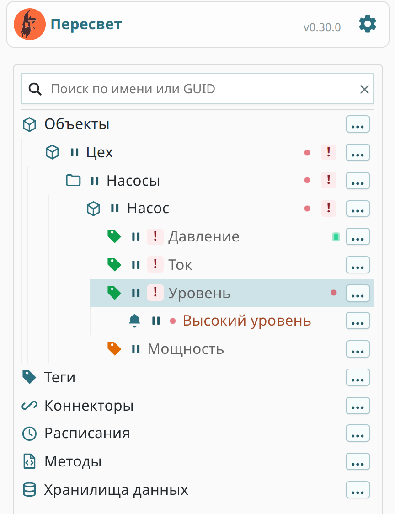
Нажмите «…» справа от «Насоса» и выберите Тревоги. Этот пункт есть в меню любого узла, даже корневых папок.
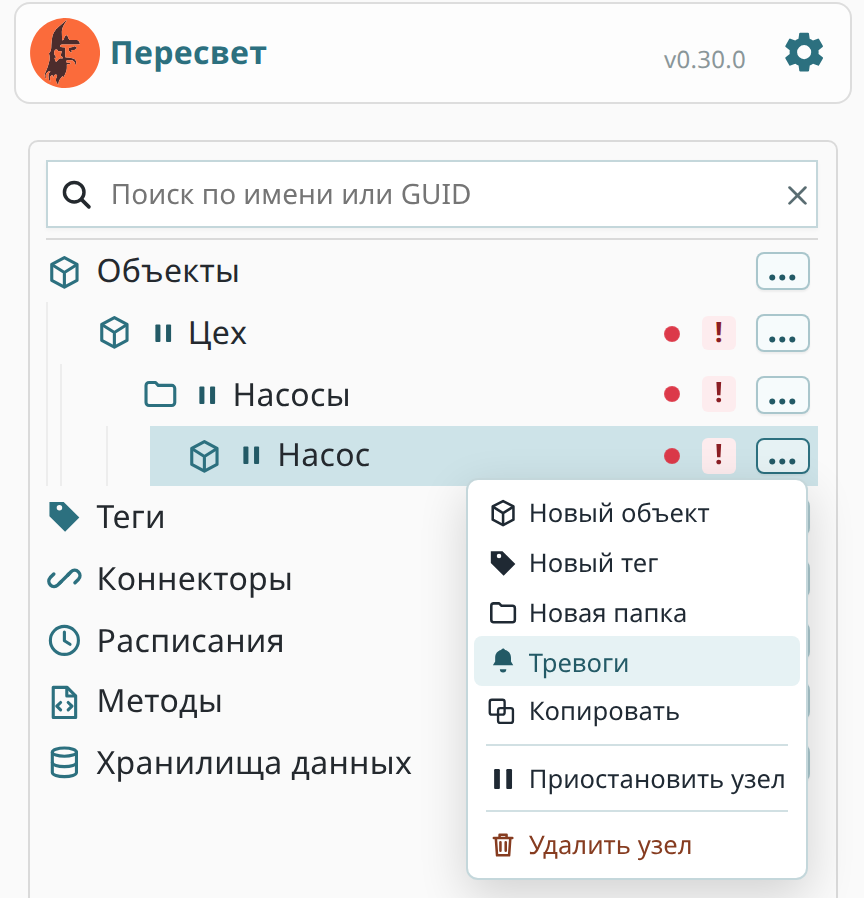
Справа, на месте свойств, откроется список тревог «Насоса»:
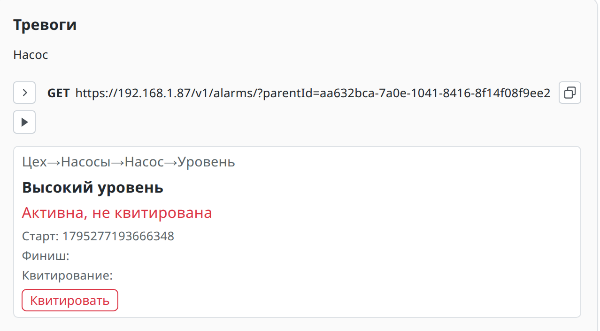
Список — это ответ платформы на запрос, как чтение тега в уроке 2: над ним строка GET с адресом запроса. В списке одна тревога. Над её именем — путь от объекта к тегу, на котором она висит: Цех→Насосы→Насос→Уровень. Под именем — состояние и три метки времени:
- «Старт» — момент возникновения, он совпадает с меткой времени значения 95;
- «Финиш» — момент пропадания. Пока тревога активна, метка пустая;
- «Квитирование» — момент квитирования. Тревогу ещё никто не квитировал, поэтому метка пустая.
Метки пришли целыми числами микросекунд — флажок format здесь по умолчанию снят. Раскройте параметры запроса стрелкой слева от строки GET, поставьте флажок format и нажмите «Читать данные» — иконку с треугольником под параметрами.
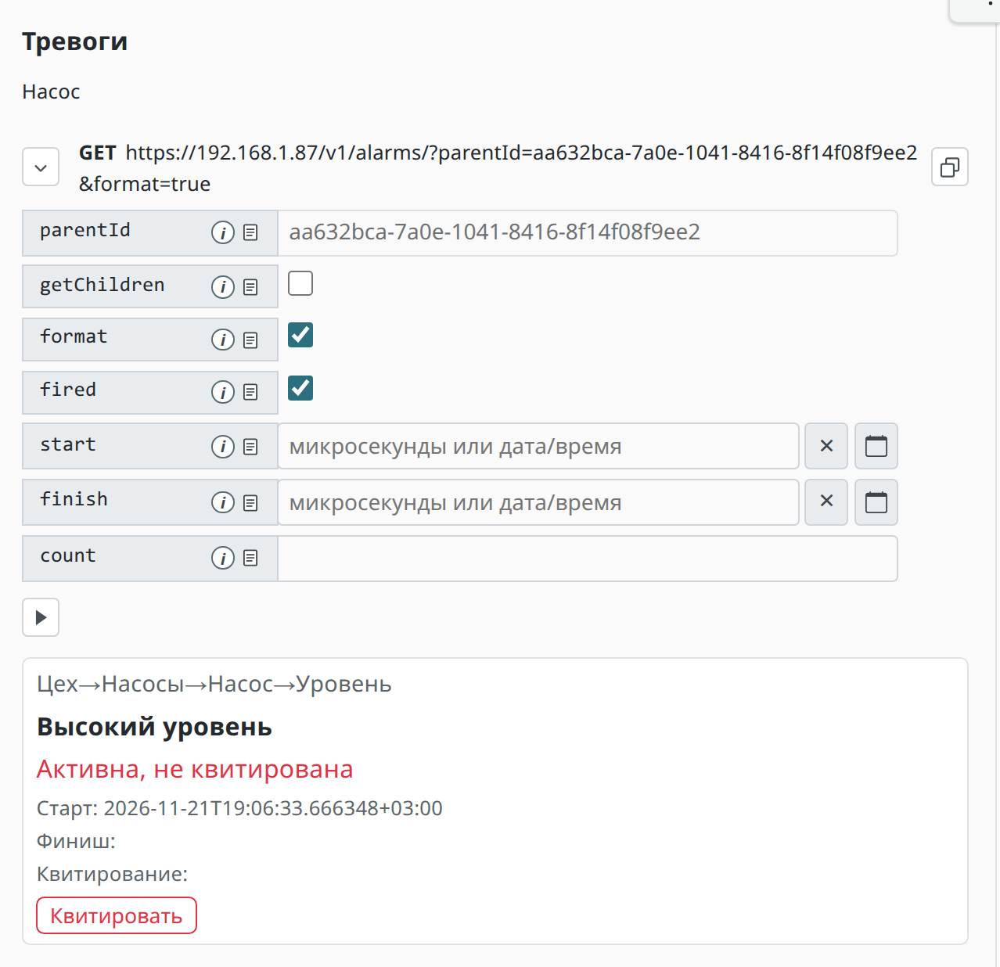
format метки времени — даты.Из остальных параметров пока важны три:
parentId— узел, чей список открыт. Для объекта это тревоги его тегов;getChildren— добавить тревоги всех узлов ниже. Нужен, если открыть список у «Цеха» или «Насосов»: их теги лежат глубже, и без флажка список будет пуст;fired— только активные тревоги. Флажок включён по умолчанию.
Список сам не обновляется: когда что-то изменилось, нажмите «Читать данные» ещё раз. Щелчок по строке тревоги раскрывает её в дереве и открывает свойства.
Запишите в «Уровень» ещё одно значение, например 97, вернитесь в список и нажмите «Читать данные». В нём та же тревога с тем же «Стартом»: тревога уже активна, и новое тревожное значение второй тревоги не создаёт.
Квитирование
Квитирование — отметка оператора «тревогу вижу». Нажмите в списке кнопку Квитировать:
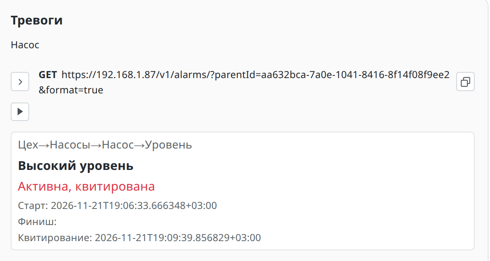
Состояние сменилось на «Активна, квитирована», в строке «Квитирование» появилось время, а кнопка исчезла. Тревога по-прежнему в списке и кружки горят: уровень всё ещё выше границы.
Тревога пропала
Запишите в «Уровень» значение 80. Значение опустилось ниже 90, и тревога пропала. Её уже квитировали, поэтому красные кружки гаснут, а в списке «Насоса» после «Читать данные» пусто — Конфигуратор пишет «Нет алярмов».

А если тревога пропала, а её не квитировали
Такая тревога не исчезает бесследно: оператор должен узнать, что она была. Запишите в «Уровень» 95, а сразу за ним 80, ничего не квитируя. Кружки продолжают гореть.
Откройте список тревог «Насоса» и нажмите «Читать данные». Список пуст: флажок fired оставляет только активные тревоги, а эта уже пропала. Снимите fired и снова нажмите «Читать данные». Теперь в списке тревога в состоянии «Пропала, не квитирована», и заполнен «Финиш»:
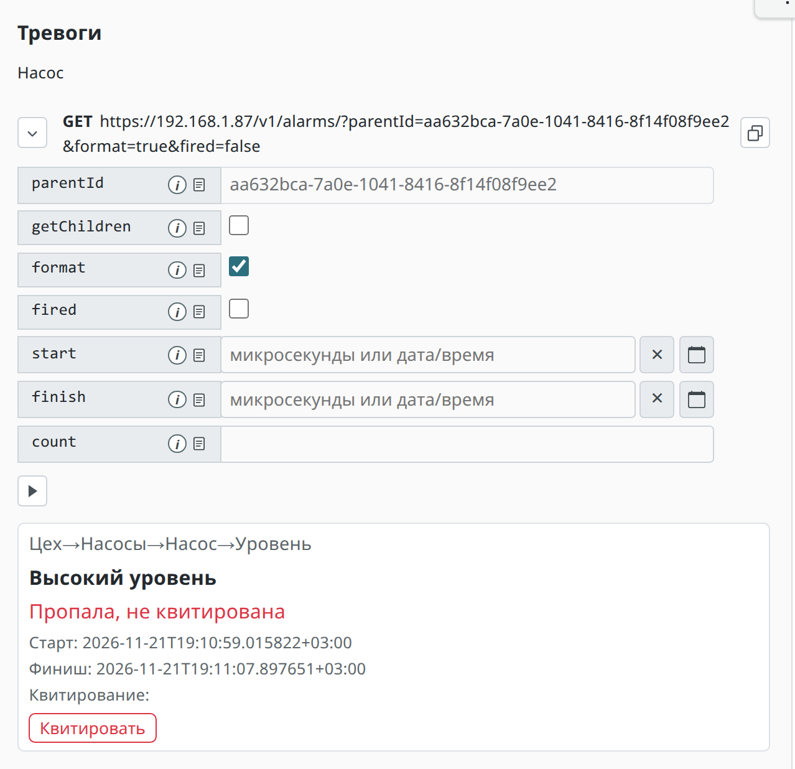
Нажмите «Квитировать» — кружки погаснут. Без флажка fired список показывает все тревоги узла с их последним состоянием, поэтому квитированная тревога в нём остаётся.
История тревоги
Каждое срабатывание платформа записывает в хранилище. Выберите в дереве тревогу «Высокий уровень» и откройте вкладку Хранилище. Тревога привязана к psql, как и её тег, а её таблица называется a_ и идентификатор тревоги.
Ниже, в блоке «Данные тревоги», — запрос на чтение, как у тега. Раскройте параметры, поставьте флажок format, в поле count впишите 10 и нажмите «Читать данные».
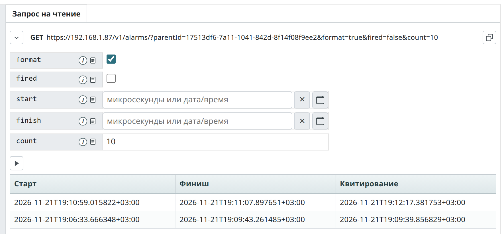
Каждая строка — одно срабатывание: когда тревога возникла, пропала и была квитирована. У срабатывания из шагов 3–5 квитирование раньше финиша: тревогу квитировали, пока уровень был высоким. Если вы выполнили спойлер шага 5, сверху будет ещё одно срабатывание — у него квитирование позже финиша.
Без count запрос возвращает только последнее срабатывание — текущее состояние тревоги. Из хранилища его берёт и сама платформа после перезапуска, поэтому состояние тревоги перезапуск переживает.
Проверка
- Под тегом «Уровень» лежит тревога «Высокий уровень»: сравнение
>=, значение 90, квитирование вручную. - После записи 95 у «Насоса» горит красный кружок, а в его списке тревог стоит «Высокий уровень» в состоянии «Активна, не квитирована».
- После квитирования состояние — «Активна, квитирована», в строке «Квитирование» стоит время, тревога остаётся в списке.
- После записи 80 кружки гаснут, а список тревог «Насоса» с флажком
firedпуст. - В «Данных тревоги» с
countвидно каждое срабатывание: «Старт», «Финиш» и «Квитирование».
Пока значения в теги записывает человек. Дальше их будет записывать программа: скрипт-имитатор насосной станции.